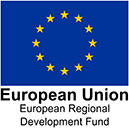

Team and funding
Ομάδα και χρηματοδότηση
Söz konusu web sitesi ve uygulama
This website and on-site application were designed and materialised through the
collaboration
between the CYENS Centre of Excellence, Silversky3D VRT Ltd, the Department of Multimedia and
Graphic Arts of the Cyprus University of Technology, and the Archaeological Research Unit of the
University of Cyprus.
Η παρούσα Ιστοσελίδα και η Εφαρμογή περιήγησης σε μνημεία και αρχαιολογικές θέσης
της Κοιλάδας του Ξερού σχεδιάστηκαν και υλοποιήθηκαν στο πλαίσιο συνεργασίας μεταξύ του CYENS
Centre of Excellence, της Silversky 3D VRT Ltd, του Τμήματος Πολυμέσων και Γραφικών Τεχνών του
Τεχνολογικού Πανεπιστημίου Κύπρου (ΤΕΠΑΚ) και της Ερευνητικής Μονάδας Αρχαιολογίας του
Πανεπιστημίου Κύπρου (ΕΜΑ, ΠΚ).
Bu sitesi ve yerinde uygulama, Kıbrıs Teknoloji Üniversitesi (TEPAK) Multimedya ve
Grafik Sanatlar Bölümü, Kıbrıs Üniversitesi Arkeolojik Araştırma Birimi, Silversky 3D VRT Ltd ve
CYENS Centre of Excellence arasındaki işbirliğinin bağlamında tasarlanmış ve uygulanmıştır..
Website and Cultural Route App Team
Ομάδα εργασίας
Web Sitesi ve Kültür Rotası Uygulama Ekibi
Scientific team: Alexandros Andreou, Savvas Avraam, Marios Avraamides, Eleftherios Ioannou, Andreas
Lanitis, Adamos Papantoniou, Giorgos Papantoniou, Niki Savvides, Maria Siakalli, John Theofanous,
Athanasios Vionis
Students: Savvina Evripidou, Rafael Evzonas, Giorgos Filippou, Katerina Giannakou, Maria
Konstantinou, Eleni Lymboura, Chrystalla Miltiadou, Andria Nikolaou, Kyriaki Panagiotou, Nikoletta
Papageorgiou, Paraskevi Psilogeni, Maria Roussou
Επιστημονική ομάδα: Σάββας Αβραάμ, Μάριος Αβρααμίδης, Αλέξανδρος Ανδρέου, Αθανάσιος Βιώνης, Γιάννης
Θεοφάνους, Ελευθέριος Ιωάννου, Ανδρέας Λανίτης, Αδάμος Παπαντωνίου, Γιώργος Παπαντωνίου, Νίκη
Σαββίδου, Μαρία Σιακαλλή
Φοιτητές: Κατερίνα Γιαννακού, Ραφαήλ Εύζωνας, Σαββίνα Ευριπίδου, Μαρία Κωνσταντίνου, Ελένη Λύμπουρα,
Χρυστάλλα Μιλτιάδου, Άντρια Νικολάου, Κυριακή Παναγιώτου, Νικολέττα Παπαγεωργίου, Μαρία Ρούσσου,
Γιώργος Φιλίππου, Παρασκευή Ψηλογένη
Bilimsel ekip: Alexandros Andreou, Savvas Avraam, Marios Avraamides, Eleftherios
Ioannou, Andreas Lanitis, Adamos Papantoniou, Giorgos Papantoniou, Niki Savvides, Maria Siakalli,
John Theofanous, Athanasios Vionis
Öğrenciler: Savvina Evripidou, Rafael Evzonas, Giorgos Filippou, Katerina Giannakou, Maria
Konstantinou, Eleni Lymboura, Chrystalla Miltiadou, Andria Nikolaou, Kyriaki Panagiotou, Nikoletta
Papageorgiou, Paraskevi Psilogeni, Maria Roussou
General Bibliography
Γενική Βιβλιογραφία
Genel Kaynakça
Bağışkan, T. 2009. Ottoman, Islamic and Islamised Monuments in Cyprus. Nicosia.
Lytra, E. and Ch. Psaltis. 2011. Πρώην μικτά χωριά στην Κύπρο: Αναπαραστάσεις του παρελθόντος, του
παρόντος και του μέλλοντος. Nicosia.
Papantoniou, G. and A.K. Vionis. 2018. The river as an economic asset: Settlement and society in the
Xeros valley in Cyprus. Land 7(4), 157.
Procopiou, Ε. 2007. Ο Συνεπτυγμένος σταυροειδής εγγεγραμμένος ναός στην Κύπρο (9ος-12ος αιώνας).
Nicosia.
Procopiou, Ε. and Ν. Pyrrou (eds.). 2014. Ευμάθιος Φιλοκάλης: Ανάδειξη επιλεγμένων βυζαντινών
μνημείων Κρήτης και Κύπρου. Rethymnon.
Bağışkan, T. 2009. Ottoman, Islamic and Islamised Monuments in Cyprus. Λευκωσία.
Λύτρα, E. και Χ. Ψάλτης. 2011. Πρώην μικτά χωριά στην Κύπρο: Αναπαραστάσεις του παρελθόντος, του
παρόντος και του μέλλοντος. Λευκωσία.
Papantoniou, G. και A.K. Vionis. 2018. The river as an economic asset: Settlement and society in the
Xeros valley in Cyprus. Land 7(4), 157.
Προκοπίου, Ε. 2007. Ο Συνεπτυγμένος σταυροειδής εγγεγραμμένος ναός στην Κύπρο (9ος-12ος αιώνας).
Λευκωσία.
Προκοπίου, Ε. και Ν. Πύρρου (επιμ.). 2014. Ευμάθιος Φιλοκάλης: Ανάδειξη επιλεγμένων βυζαντινών
μνημείων Κρήτης και Κύπρου. Ρέθυμνο.
Bağışkan, T. 2009. Ottoman, Islamic and Islamised Monuments in Cyprus. Λευκωσία.
Λύτρα, E. και Χ. Ψάλτης. 2011. Πρώην μικτά χωριά στην Κύπρο: Αναπαραστάσεις του παρελθόντος, του
παρόντος και του μέλλοντος. Λευκωσία.
Papantoniou, G. και A.K. Vionis. 2018. The river as an economic asset: Settlement and society in the
Xeros valley in Cyprus. Land 7(4), 157.
Προκοπίου, Ε. 2007. Ο Συνεπτυγμένος σταυροειδής εγγεγραμμένος ναός στην Κύπρο (9ος-12ος αιώνας).
Λευκωσία.
Προκοπίου, Ε. και Ν. Πύρρου (επιμ.). 2014. Ευμάθιος Φιλοκάλης: Ανάδειξη επιλεγμένων βυζαντινών
μνημείων Κρήτης και Κύπρου. Ρέθυμνο.
Acknowledgements
Ευχαριστίες
Teşekkür bölümü
Department of Antiquities - Cyprus, Holy Metropolis of Trimythous, Parishes of Alaminos and
Kophinou, Community Councils of Alaminos and Kophinou, Archaeological Research Unit – University of
Cyprus
Τμήμα Αρχαιοτήτων Κυπριακής Δημοκρατίας, Ιερά Μητρόπολη Τριμυθούντος, Ενορίες Αλαμινού και Κοφίνου,
Κοινοτικά Συμβούλια Αλαμινού και Κοφίνου, Ερευνητική Μονάδα Αρχαιολογίας – Πανεπιστήμιο Κύπρου
Eski Eserler Dairesi - Kıbrıs, Trimithus Kutsal Metropolisi, Alaminos ve Kofinu Cemaatleri, Alaminos
ve Kophinou Topluluk Konseyleri, Arkeolojik Araştırma Birimi - Kıbrıs Üniversitesi
Funding
Χρηματοδότηση
Finansman
The Project EXCELLENCE/1216/0362 (UnSaLa-CY) is co-financed by the European Regional Development
Fund and the Republic of Cyprus through the Research and Innovation Foundation.
Το Έργο EXCELLENCE/1216/0362 (UnSaLa-CY) συγχρηματοδοτείται από το Ευρωπαϊκό Ταμείο Περιφερειακής
Ανάπτυξης και την Κυπριακή Δημοκρατία μέσω του Ιδρύματος Έρευνας και Καινοτομίας.
EXCELLENCE / 1216/0362 (UnSaLa-CY) Projesi, Araştırma ve Yenilik Vakfı aracılığıyla Avrupa Bölgesel
Kalkınma Fonu ve Kıbrıs Cumhuriyeti tarafından ortak finanse edilmektedir.
